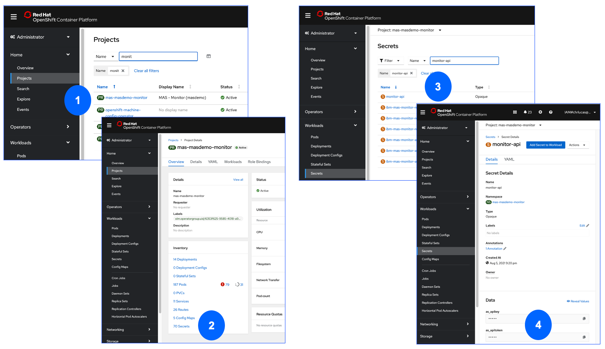
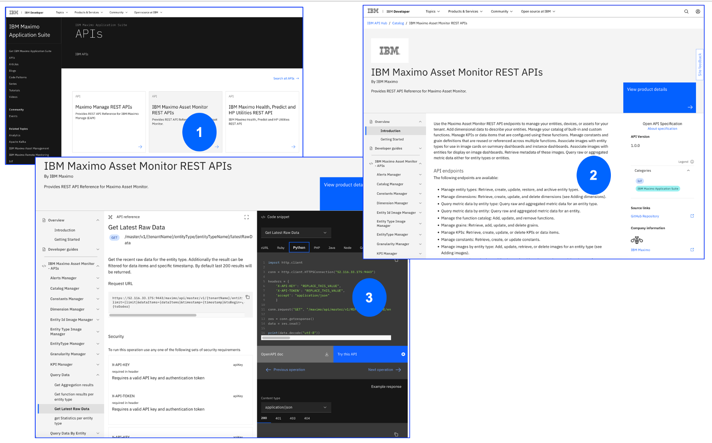
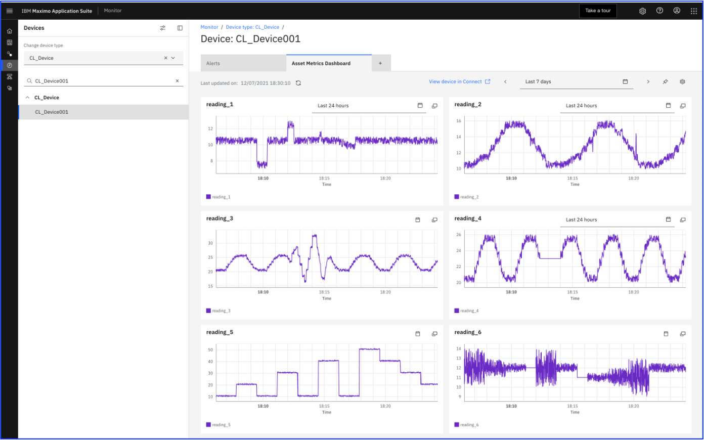
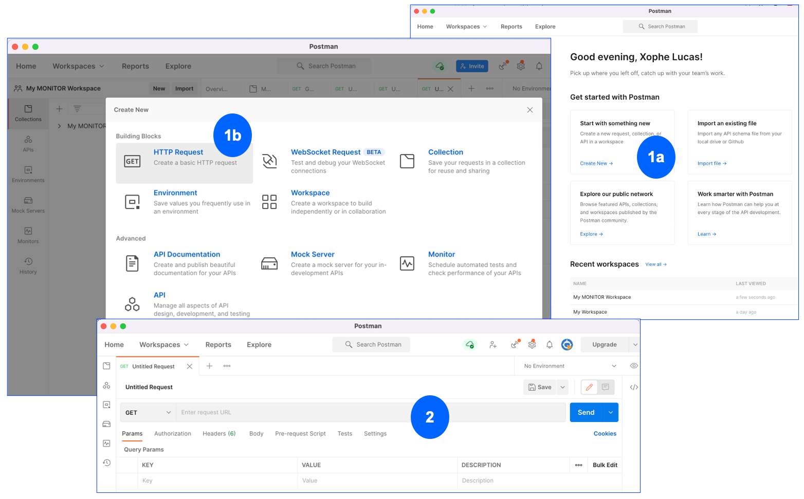
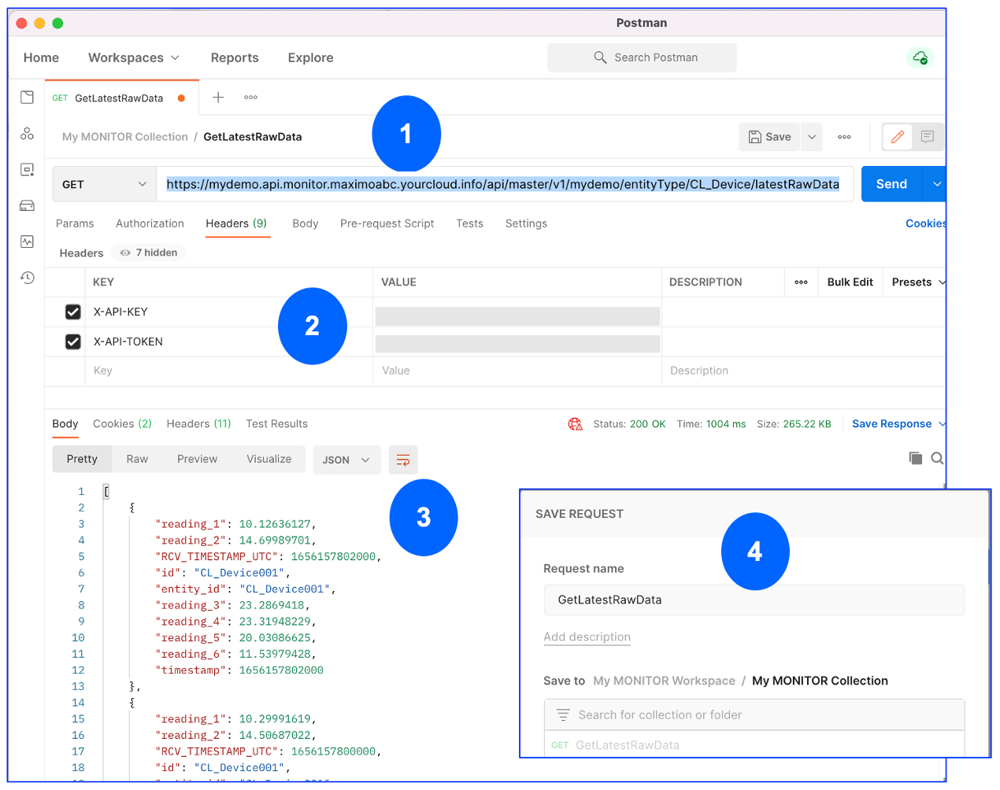
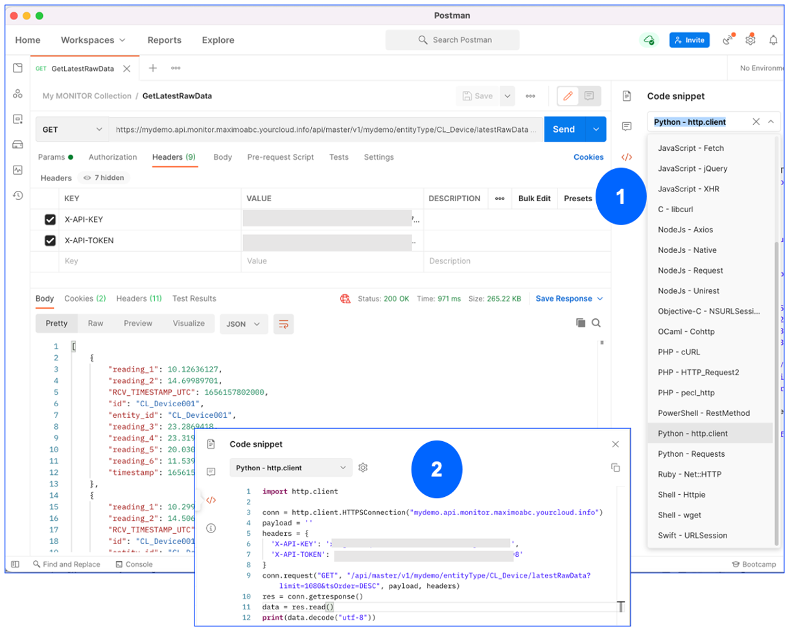
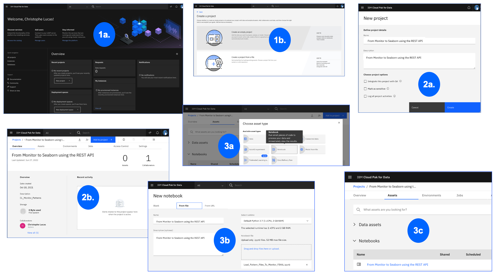
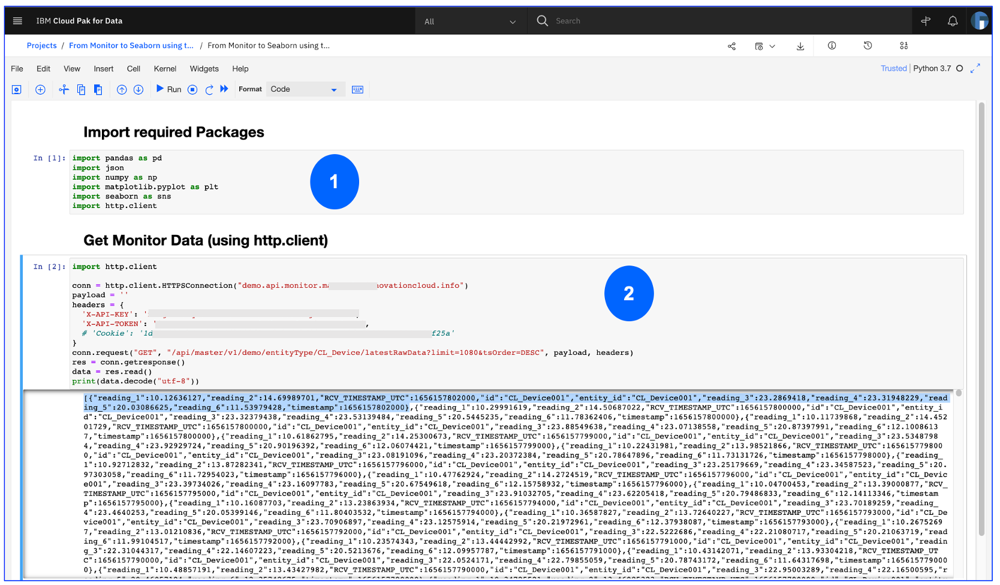
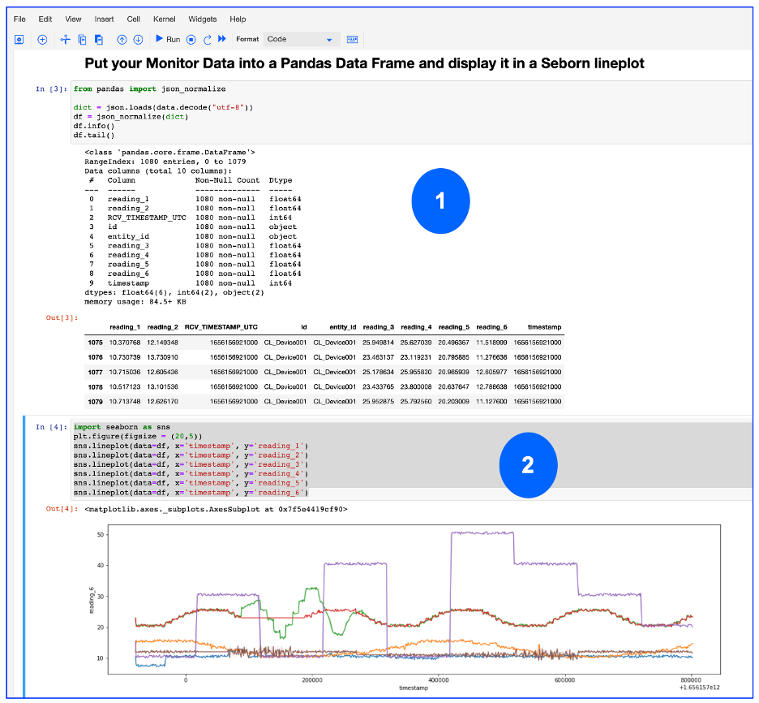
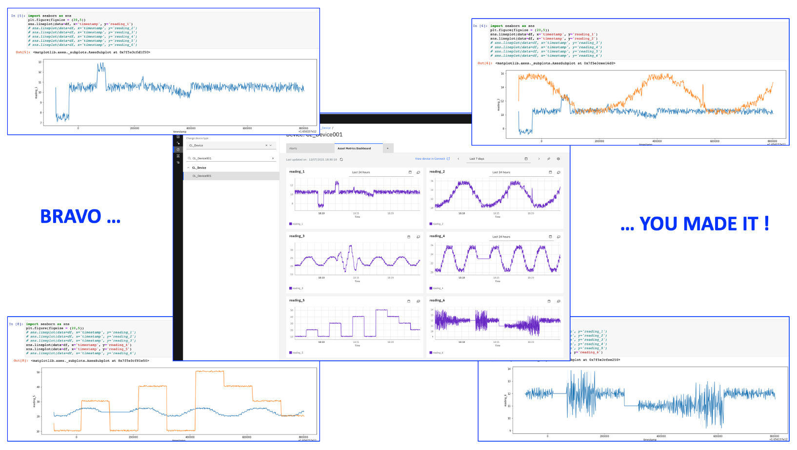

[Page last updated on 29 June 2022]
(MAS86) Extract Monitor Data with the REST API and Display it in a Seaborn Plot
PREREQUISITES & DISCLAIMER
Disclaimer
This Lab is provided as-is and does NOT represent formal IBM documentation in any way. Please send any feedback directly to Christophe Lucas.
This Lab assumes that you have:
-
an ID and password to connect to the MONITOR application of a Maximo Application Suite (aka MAS) environment.
-
an ID and password to access a Cloud Pak For Data (aka CP4D) instance. CP4D is typically part of any MAS installation (as it contains e.g. the MONITOR DB2 data lake), and we recommend using your MAS CP4D instance to run this lab.
-
an ID and password to access the underlying OpenShift console of your MAS environment (will be required to get your MONITOR API key and token).
-
Postman (or an equivalent 'API building & testing' tool) installed, to test the MONITOR APIs.
This Lab was built using MAS MONITOR 8.6 and Cloud Pak For Data 3.5 - both part of a MAS 8.6 environment running on IBM Cloud.
0. Objectives & Tips
Tip
I tried to make the instructions of this Lab as (visually) clear as possible, i.e. each set of numbered instructions is followed by screenshots reflecting those numbers. Do not hesitate to right-click the images and Open Image in New Tab to see all the image details and zoom-in/out.
In this Lab you will:
-
Get your MAS Monitor Instance Details Gather the API Key and Token of your Monitor Environment, and build what I call the 'Lab Root API Call' String for your Monitor API Call.
-
Have a look at the available Monitor APIs, including the latestRawData API Have a look at the list of available Monitor APIs, and focus on the
latestRawDataAPI which you will use to extract the latest data of a given Device Type. -
Test the latestRawData API call in Postman and build the Code. Using Postman, build and test the
latestRawDataAPI call, and build the Python code that will be further used in the Jupyter Notebook. -
Create a CP4D Project and a Jupyter Notebook Setup the required CP4D Project and create an empty Jupyter Notebook.
-
Build and Run the Notebook Put everything together in a simple 4-cells Jupyter Notebook where you will extract the latest raw data of a given Device Type, and finally display it in a Seaborn line plot.
1. Get your MAS Monitor Instance Details
1.1 Get API Key & Token
In order to call Monitor's REST APIs, a key first step is to get your MAS Monitor instance X-API-KEY & X-API-TOKEN values.
The procedure to get those 2 values is described in the Connection Parameters - Analytics Service APIs section of Monitor's documentation. Do the following:
- Access the OpenShift Container Platform web console on which your MAS environment is running.
From the left menu, select
Project. In the Search field, typemonitorand select the Project that looks likemas-something-monitor- in my case and screenshot below, it ismas-masdemo-monitor. Click on that Project. - In the opened Project, go to the bottom-left of the screen on the
Inventorycard, and click theSecretslink. - In the opened Secrets window Filter-Search field, type and select the
monitor-apiSecret. Click on that Secret. - At the bottom of the Details tab of that Secret, in the Data section, you will see a field called
as_apikey. Click theCopy to clipboardand paste that value somewhere on your machine e.g. in your Notepad. Thatas_apikey= theX-API-KEYthat we will use with our Monitor REST API Call(s). Repeat the same steps for the field calledas_apitoken- thatas_apitoken= theX-API-TOKENthat we will also need for our REST API Call(s).
In the rest of this Lab, the value of X-API-KEY will be referred to as YOUR-X-API-KEY
and the value of X-API-TOKEN as YOUR-X-API-TOKEN.

1.2 Build the 'Lab Root API Call' String
For you to be able to call the lastestRawDataMonitor API
in Section 3,
you need to build what I call the 'LAB Root API Call' string.
That string depends on your MAS Monitor env. Here is how you can find and build it:
------------------------------------------------------------------
Build the 'Lab Root API Call' String for your Monitor API Calls
------------------------------------------------------------------
IF your 'MAS Homepage' URL looks like this:
https://mydemo.home.maximoabc.yourcloud.info/
THEN your 'MAS - MONITOR Homepage' URL should look like this:
https://mydemo.monitor.maximoabc.yourcloud.info/home
THEN your 'MAS - MONITOR - Watson IoT Platform Homepage' should look like this:
https://mydemo.iot.maximoabc.yourcloud.info/
THEN & FINALLY your 'MAS - MONITOR - Lab Root API Call String' should look like this:
https://mydemo.api.monitor.maximoabc.yourcloud.info/api/master/v1/mydemo/
https://mydemo.api.monitor.maximoabc.yourcloud.info/api/master/v1/mydemo/.
[Note that mydemo also corresponds to the MAS Monitor - Watson IoT Platform {tenantName} (see next section)]
2. Have a look at the available Monitor APIs, including the latestRawData API
The list of MAS Monitor APIs can be accessed as follows:
-
Access the MAS APIs Main Page
-
Click on and access the IBM Maximo Asset Monitor REST APIs. Here, on the left-side menu, go through the multiple APIs to get an idea of the vast amount of possibilities that are available to interact with Monitor's data !
-
Click on the
Query Datafolder, then on the Get Latest Raw Data API.
Watch how that latestRawData GET call has this form /master/v1/{tenantName}/entityType/{entityTypeName}/latestRawData.
Combining that with the 'Lab Root API Call' we defined in earlier section, the GET string that we will use in Postman in the next section should
be https://mydemo.api.monitor.maximoabc.yourcloud.info/api/master/v1/mydemo/entityType/{entityTypeName}/latestRawData where the last piece
you'll need to choose is the {entityTypeName}.

3. Test the latestRawData API call in Postman and build the Code
PREREQUISITE: The latestRawData API call will work with any Device Type that has Devices with data appearing in Monitor.
That Device Type corresponds to the {entityTypeName} in the API call. The latestRawData will return all the latest data for all Devices of
that given Device Type.
So, choose any Device Type (which has at least 1 Device with data in Monitor) that you want. If you have none yet, follow e.g.
this Discover MONITOR with Pattern Files to create a Device Type, a Device
and send data to it.
In this Lab, we will use a Device Type called CL_Device and its associated CL_Device001 Device, to which
1080 rows of readings (with reading types reading_1 to reading_6) were sent as per the Discover MONITOR with Pattern Files Lab.
This is what that data looks like - and it is that exact data that we are going to extract then display into a Seaborn Plot.

So, first choose the Device Type that you want to extract data from - and in all subsequent sections, replace CL_Device
by your chosen Device Type name.
- Launch your Postman application. From the Homepage
Get started with Postmansection, clickCreate Newin theStart with something newsection, then select and click theHTTP Requestblock. - That will open an empty Request as per image below.

In the opened HTTP Request:
- In the top field, select
GET, and enter the API call string we earlier built, i.e.https://mydemo.api.monitor.maximoabc.yourcloud.info/api/master/v1/mydemo/entityType/CL_Device/latestRawData. (Attention: Do replaceCL_Deviceby your chosen Device Type, and themydemo.api.monitor.maximoabc.yourcloud.infostring with your MAS Monitor Environment value, as you found it in 1.2 Build the 'Lab Root API Call' String). - In the
Headerstab, enter 2 lines, one calledX-API-KEYand the otherX-API-TOKEN, and in the VALUE columns, enter theYOUR-X-API-KEYandYOUR-X-API-TOKENvalues that you found for your Monitor Env in the 1.1 Get API Key & Token section. Leave the other tabs as-is. - Next to the
Getstatement, click theSendbutton ... and observe how in the outputBodysection, you can see a json file which lists all the latest readings of your chosen Device Type. Well done ! - Optionally, do
Save Asyour Request in a Postman Collection (just follow the prompts) - for future re-use !

As you will have noticed in the Get Latest Raw Data
documentation, the API call can also take some input parameters, e.g. limit, tsBegin, tsEnd etc.
So, if e.g. you want the latest 1080 rows of data to be returned, in timestamp-descending order, just update your string to:
https://mydemo.api.monitor.maximoabc.yourcloud.info/api/master/v1/mydemo/entityType/CL_Device/latestRawData?limit=1080&tsOrder=DESC
and re-Send the API call.
Fantastic ! We now have a perfectly working API call. Let's further use Postman to create the Python code that we will use in the Jupyter Notebook.
- One of Postman's best-kept secrets is the little
< / > Codebutton in the far-right toolbar. Click it. In theCode Snippetdropdown box, notice that Postman can actually create a code snippet out of your GET call in a vast array of languages. Select thePython - http.clientoption. - Notice how Postman generated a Python code snippet for you. Copy this code snippet as we will use it in
one of the key cells of our Jupyter Notebook. Note that it may be that a
Cookieauto-generated line appears in the code snippet - you can just comment it out.
The code snippet should look like this:
import http.client
conn = http.client.HTTPSConnection("mydemo.api.monitor.maximoabc.yourcloud.info")
payload = ''
headers = {
'X-API-KEY': 'YOUR-X-API-KEY',
'X-API-TOKEN': 'YOUR-X-API-TOKEN',
# 'Cookie ': 'Auto-Generated, You can Comment this out'
}
conn.request("GET", "/api/master/v1/demo/entityType/CL_Device/latestRawData??limit=1080&tsOrder=DESC", payload, headers)
res = conn.getresponse()
data = res.read()
print(data.decode("utf-8"))

4. Create a CP4D Project and a Jupyter Notebook
Now that we have the exact API call and checked that it worked, we're going to use it in a Jupyter Notebook part of a CP4D Project.
Let's first create the CP4D Project:
- Login to CP4D and click
New projectin theRecent Projectsbox. SelectCreate an empty project. - Name your Project e.g.
From Monitor to Seaborn using the REST API. ClickCreate. - Click the blue
Add to Projectbutton, and selectNotebook. Name it e.g.From Monitor to Seaborn using the REST API. Select the defaultPython 3.7 (1 vCPU, 2 GB RAM)runtime. ClickCreate.
We are now ready to build the few cells required to extract the Monitor data then send it to a Seaborn Plot.

5. Build and Run the Notebook
Click on the Notebook you just created, and when opened, click the little pencil icon (top bar) to edit it.
- In the first cell, write
# Import required Packages, selectMarkdownformat, and run the cell. Click theInsertmenu and selectInsert Cell Below. In the new cell, selectCodeformat, enter the below code, then run the cell. Note this should generate no output - it just means we are importing the required packages to run the next cells (e.g. pandas which is the de-facto data analysis tool for Python, seaborn which is a data visualization package based on matplotlib etc). - In a new cell, write
# Get Monitor Data (using http.client), selectMarkdownformat, and run the cell. Again,Insert Cell Below, and in the new cell, write the code that you generated in the Test the latestRawData API call in Postman and build the Code section (with, of course, your ownYOUR-X-API-KEY,YOUR-X-API-TOKEN, HTTPConnection string etc). Run the cell. This is a key moment as this is the cell which will connect to Monitor and return the same data that we earlier returned with Postman.
As a reminder, your cell should look like this:
import http.client
conn = http.client.HTTPSConnection("mydemo.api.monitor.maximoabc.yourcloud.info")
payload = ''
headers = {
'X-API-KEY': 'YOUR-X-API-KEY',
'X-API-TOKEN': 'YOUR-X-API-TOKEN',
# 'Cookie ': 'Auto-Generated, You can Comment this out'
}
conn.request("GET", "/api/master/v1/demo/entityType/CL_Device/latestRawData?limit=1080&tsOrder=DESC", payload, headers)
res = conn.getresponse()
data = res.read()
print(data.decode("utf-8"))
At this stage, your Notebook should look like this: 
Are you ready to finally display that data in a basic Seaborn Line Plot ? Let's go for the last mile ...
Now we are going to transform that data into a pandas dataframe, which values we will finally display into the Seaborn plot.
-
In a new cell, write
The output should look as per picture below - we now have a pandas data frame, yeah !# Put your Monitor Data into a Pandas Data Frame and display it in a Seborn lineplot, selectMarkdownformat, and run the cell. Again,Insert Cell Below, and in the new cell, write the following code, and run the cell. -
Finally, let's build the Seaborn lineplot ! Copy-paste this code into a last cell, and run it. Note that we here use the 6 types of reading (
reading_1toreading_6) of our chosenCL_DeviceDevice Type. If you chose another Device Type for this Lab, you should obviously replace thereading_1etc strings below by the actual IoT readings that your chosen Device Type captures (e.g. could bepressure,temerature,vibrationetc). And ... there you go - you just displayed the last 1080 readings (all of them) of a Monitor Device Type into a Seaborn plot !import seaborn as sns plt.figure(figsize = (20,5)) sns.lineplot(data=df, x='timestamp', y='reading_1') sns.lineplot(data=df, x='timestamp', y='reading_2') sns.lineplot(data=df, x='timestamp', y='reading_3') sns.lineplot(data=df, x='timestamp', y='reading_4') sns.lineplot(data=df, x='timestamp', y='reading_5') sns.lineplot(data=df, x='timestamp', y='reading_6')

One last thing ! You noticed in the above lineplot that we actually display the latestRawData values of the 6 types of reading (reading_1 to reading_6)
of our chosen CL_Device Device Type.
Do you want to display just 1 or a selected set of those readings ?
Nothing easier, just comment out any of the line(s) you do not want to see, e.g. # sns.lineplot(data=df, x='timestamp', y='reading_1')
will simply exclude the visualization of reading_1 !
This final picture compares what the original data looked like in MAS Monitor, and how it is exactly reflected in those Seaborn line plots.
Well done, you made it ! 
Suggested Next Steps.
This Lab only used 1 API from Monitor (latestRawData) and only made a very basic Seaborn visualization. If you feel like it:
- try the other Monitor REST APIs and display other results than just the latest raw data.
- create new types of Seaborn plots (there is so much more than just lineplots in that package).
- put your Seaborn plot into e.g. a Dashboard and make it interactive so you can e.g. select reading types to be displayed, filter by Devices etc.
- explore and try out other Visualizations tools like e.g. Bokeh
- etc, etc, etc ...
Thanks a lot for your time, hope you enjoyed - see you soon for more Lab adventures !
Cheers, Christophe